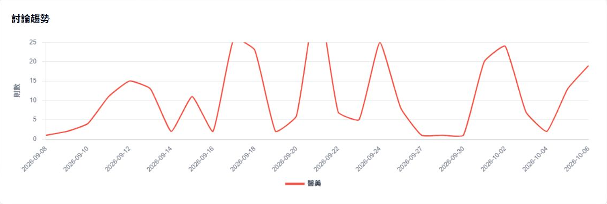
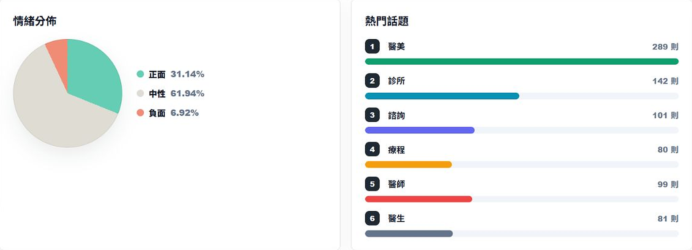
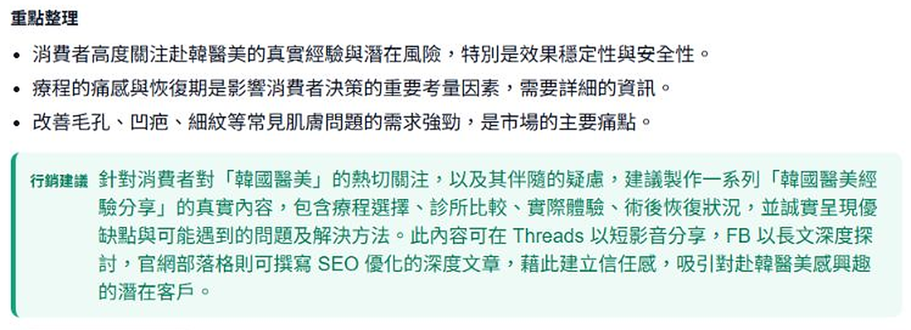
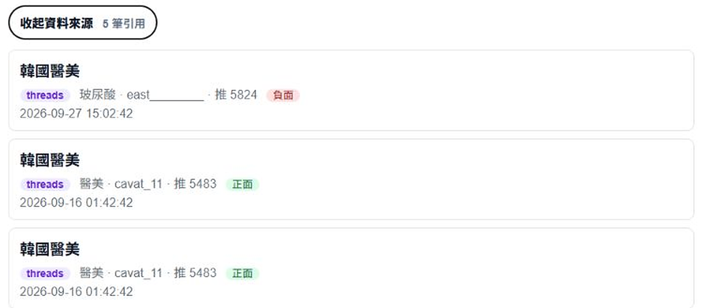

專題成果 MeBOD
04
專題成效
END RESULT
從上萬篇社群討論，
到一份每句話都查得到出處的報告
到一份每句話都查得到出處的報告
10,370
篇社群文章
來自 22 個看板與主題
6,364
則留言
逐則判讀情緒
4
個平台爬蟲
PTT・Dcard・Mobile01・Threads
19,631
個向量段落
供 AI 問答語意檢索
資料統計至 115/10/08
文章來源
PTT 9,398Dcard 623Threads 184Mobile01 165
文章情緒（已評分 10,317 篇）
正面 34.0%中性 58.4%負面 7.6%
RESULT 1
Dashboard 一頁看懂討論
輸入療程或品牌關鍵字，立即看到聲量趨勢、情緒分布與醫美領域熱門話題。



掃碼體驗
mebod.clouda.dpdns.org
訪客即可試用 Dashboard 與 AI 問答，登入後可設定監測預警。
RESULT 2
AI 問答，每句話都有出處
以混合檢索找出相關原文再回答；回答下方列出引用文章、平台、作者與情緒，點擊即可回到原文。


RESULT 3
一鍵產出輿情報告
總覽指標、情緒比例、AI 摘要、熱門話題與消費者痛點整理成報告，可列印或存成 PDF，也能匯出 Excel。

品質驗證
533項
自動化測試通過
後端 pytest 490、前端 Vitest 43；1 項略過（115/10/08）
0篇變動
同批 100 篇重跑，標籤不變
判讀改用 temperature 0 後兩次結果完全相同；原設定 0.3 時有 12 篇改變
82%
盲標一致率（κ = 0.73）
分層抽樣 100 篇，與另一個語言模型盲標比對。此為模型間一致率，不是人工標註正確率
介面截圖為 115/10/07 實際系統畫面，僅裁切未修改。統計數字查詢自本系統資料庫。系統定位為資訊整理與行銷觀察工具，不提供醫療建議。